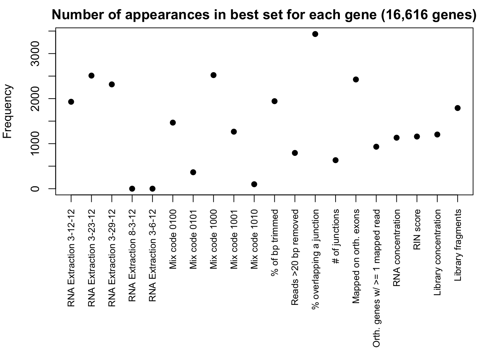

# Load library
library("glmnet")## Loading required package: Matrix## Loading required package: foreach## Loaded glmnet 2.0-5library("formattable")
# Load expression data
expression <- read.delim("~/Reg_Evo_Primates/ashlar-trial/data/gc_cyclic_loess_random_var_gene_exp_counts")
expression_t <- t(expression)
# Load variables data
samples <- read.csv("~/Reg_Evo_Primates/ashlar-trial/data/RNA_seq_info.csv")
samples <- as.data.frame(samples)#Use the biological variables (tissue and species) and the technical variables that were correlated with tissue and species
tech_var <- c(3:8,11,12,16:24)
#Add technical variables
RNA_seq_tech_var <- samples[,tech_var]
dim(RNA_seq_tech_var)## [1] 47 17RNA_seq_tech_var <- RNA_seq_tech_var[-31,]
expression_t <- expression_t[-31,]
# RNA_seq_tech_var <- as.data.frame(RNA_seq_tech_var)
#We always want species and tissue in the model, so we will use the residuals from this lm
#Make an array to hold the residuals
# expression_t_no_NA <- expression_t[-31,]
# all_resid <- array(NA, dim=c(46, 17671))
# j = 1
# for(j in 1:17671){
# fit <- lm(expression_t_no_NA[,j] ~ as.factor(RNA_seq_tech_var[,2]) + as.factor(RNA_seq_tech_var[,3]))
# all_resid[,j] <- resid(fit)
#}#Set up the matrix of all technical variables
RNA_species <- model.matrix(~ -1+Species, RNA_seq_tech_var)
RNA_tissue <- model.matrix(~ -1+Tissue, RNA_seq_tech_var)
RNA_extra <- model.matrix(~ -1+RNA.extraction.date, RNA_seq_tech_var)
Multi_mix <- model.matrix(~ -1+Multiplexing.Mixes.Code, RNA_seq_tech_var)
cat_exp_var <- cbind(RNA_species, RNA_tissue, RNA_extra, Multi_mix)
num_exp_var <- RNA_seq_tech_var[,7:17]
num_exp_var <- num_exp_var[,-6]
# Make the matrix with biological and technical variables
exp_var_no_NA <- cbind(cat_exp_var, num_exp_var)
exp_var_no_NA <- as.matrix(exp_var_no_NA)
dim(exp_var_no_NA)## [1] 46 27#Run glmnet on all the genes, save the coef. Repeat for each gene.
#Alpha = 1 to allow for lasso regression because of correlations between the explanatory variables
lambda_min <- array(NA, dim= c(1, 16616))
# Do not penalize tissue and species
p.fac = rep(1,28)
p.fac[c(1:7)] = 0
l = 1
for(l in 1:length(lambda_min)){
resp_var <- as.matrix(expression_t[,l])
glmmod<-cv.glmnet(x=exp_var_no_NA,y=resp_var, penalty.factor = p.fac)
lambda_min[,l] <- as.matrix(glmmod$lambda.min)
# print(l)
}
rowMeans(lambda_min) #0.08845252## [1] 0.08840977#Make an array to hold the dgCMatrix
best_set <- array(NA, dim= c(28, 16616))
l = 1
for(l in 1:16616){
#Define the response variable
resp_var <- as.matrix(expression_t[,l])
glmmod<-glmnet(x=exp_var_no_NA,y=resp_var, standardize = TRUE, intercept = FALSE, alpha = 1, penalty.factor = p.fac)
best_set[,l] <- as.matrix(coef(glmmod, s =0.08845252))
#print(l)
}## Warning: from glmnet Fortran code (error code -52); Convergence for 52th
## lambda value not reached after maxit=100000 iterations; solutions for
## larger lambdas returnedbest_set_copy <- best_set
best_set_copy[best_set_copy != 0] <- 1
# Save this data frame so we can then look at the expression values for the different genes
best_set_copy_save <- as.data.frame(best_set_copy)
# write.table(best_set_copy_save,file="/Users/LEB/Reg_Evo_Primates/ashlar-trial/data/Best_set_bio_tech_var.txt",sep="\t", col.names = T, row.names = T)
# Look at how many times each technical variable is included in the model for expression
var_score <- rowSums(best_set_copy)
best_set_intercept_false_copy <- best_set
best_set_intercept_false_copy[best_set_intercept_false_copy != 0] <- 1
var_score_intercept <- as.data.frame(rowSums(best_set_intercept_false_copy))
par(mar = c(11, 4, 2, 1))
plot(var_score_intercept[9:28,], xaxt = 'n', xlab = " ", pch = 19, ylab = "Frequency", main = "Number of appearances in best set for each gene (16,616 genes)")
axis(1, at = 1:20, labels = c("RNA Extraction 3-12-12", "RNA Extraction 3-23-12", "RNA Extraction 3-29-12", "RNA Extraction 8-3-12", "RNA Extraction 3-6-12", "Mix code 0100", "Mix code 0101", "Mix code 1000", "Mix code 1001", "Mix code 1010", "% of bp trimmed", "Reads >20 bp removed", "% overlapping a junction", "# of junctions", "Mapped on orth. exons", "Orth. genes w/ >= 1 mapped read", "RNA concentration", "RIN score", "Library concentration", "Library fragments"), las = 2, cex.axis = 0.8)
# Find how many genes do not include any technical factors in the best set
length(which(colSums(best_set_copy) == 7))## [1] 5345# Find how many genes include 1 technical factor in the best set
length(which(colSums(best_set_copy) == 8))## [1] 4058# Find how many genes include 2 techincal factors in the best set
length(which(colSums(best_set_copy) == 9))## [1] 3147# Find how many genes include 3 techincal factors in the best set
length(which(colSums(best_set_copy) == 10))## [1] 1787# Find how many genes include 4 techincal factors in the best set
length(which(colSums(best_set_copy) == 11))## [1] 922# Find how many genes include 5 techincal factors in the best set
length(which(colSums(best_set_copy) == 12))## [1] 537# Find how many genes include 6 or more techincal factors in the best set
length(which(colSums(best_set_copy) > 12))## [1] 820# Make a table of the results
DF <- data.frame(Number_of_tech_var_in_best_set=c("0", "1", "2", "3", "4", "5", "6+"), Number_of_genes=c("5345","4058","3147","1787","922","537","820"), Percentage_of_genes=c("32.2%", "24.4%", "18.9%", "10.8%", "5.5%", "3.2%", "4.9%"))
formattable(DF)| Number_of_tech_var_in_best_set | Number_of_genes | Percentage_of_genes |
|---|---|---|
| 0 | 5345 | 32.2% |
| 1 | 4058 | 24.4% |
| 2 | 3147 | 18.9% |
| 3 | 1787 | 10.8% |
| 4 | 922 | 5.5% |
| 5 | 537 | 3.2% |
| 6+ | 820 | 4.9% |